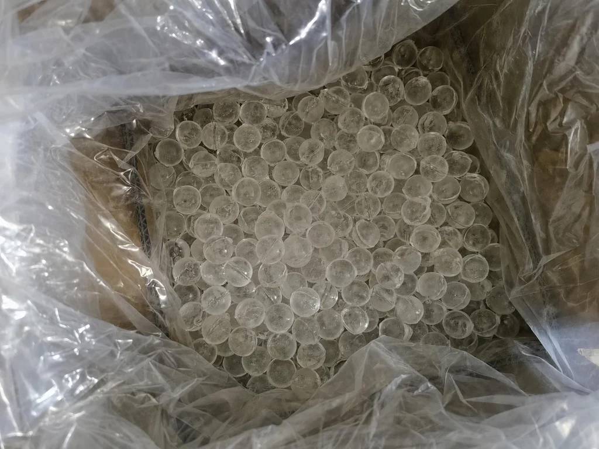

Yuchen Water
Yuchen Water · Products
Compare the product family, connection format and reviewed project requirements before requesting a quotation.
Available models
Compare the listed models and open a detail page. Model records are counted separately from configurable dimensions; suitability must be confirmed for your project.
SYSTEMS
RO Water Purifiers

RO Water Purifiers
Compare Yuchen RO water purifier options by capacity, installation style, filtration layout and OEM customization for drinking-water projects.
COMPONENTS
PP Melt-Blown Filter Cartridges

PP Melt-Blown Filter Cartridges
Compare standard and Big Blue PP melt-blown sediment filter cartridges by length, weight, construction and selectable micron rating for OEM sourcing.

CTO Carbon Block Filters
Compare CTO compressed and PCO sintered activated carbon filter cartridges by length, carbon source, iodine value and treatment for OEM sourcing.

GAC/UDF Filter Cartridges
Compare UDF granular activated carbon cartridges by length, carbon source, media weight, iodine value and acid-washed treatment for OEM sourcing.

T33 Inline Filters
Compare quick-connect, flat-end and female-threaded T33 coconut-shell activated carbon filters by size, iodine value and acid-washed treatment.

RO Membranes
Source traceable original Vontron reverse osmosis membrane elements from China, with standard model supply, special model review, housing and pump compatibility checks, and export quotation support.

UF Membrane Filters
UF hollow fiber membrane filters for gravity purifiers, dispensers and kitchen systems. Custom housing, connector, flow and private label options.
DEVICES
Water Dispensers

Water Dispensers
Explore water dispenser models for office, school, factory and commercial use, with tank, power, outlet and filtration options confirmed by project.

Filter Housings
Water filter housing manufacturer for PP, Big Blue and 304 stainless steel housings. Optional 316L, OEM ports, brackets, labels and packaging.
Yuchen Water · Products
Siliphos balls · polyphosphate scale inhibitor
Siliphos balls — specialty filter media. polyphosphate · Siliphos balls Ø19 mm, Ø10 mm, Ø3–8 mm; broken particles 6–12 mm / 4–10 mm; powder. Specifications may vary by selected configuration. Please confirm final requirements before quotation. OEM/ODM: wood pallet · master carton · small boxes · small bottles.